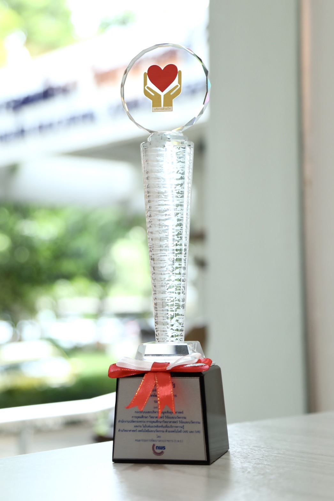

กรข. คว้า “รางวัลเลิศรัฐ” ปี 2566 พร้อมผลักดันเป็นต้นแบบการพัฒนาการบริการ มุ่งมั่นสู่ความเป็นเลิศ
.jpg)
เมื่อวันที่ 7 ก.ย. นายวันนี นนท์ศิริ ผู้ช่วยปลัดกระทรวงการอุดมศึกษา วิทยาศาสตร์ วิจัยและนวัตกรรม (อว.) รับรางวัลบริการภาครัฐ ประเภทพัฒนาการบริการ ระดับดี ประจำปี 2566 ผลงาน : โมไบล์แอปพลิเคชันเพื่อบริการความรู้ด้านวิทยาศาสตร์ เทคโนโลยีและนวัตกรรมด้วยเทคโนโลยี (AR) และ (VR) ในงานประกาศรางวัลเลิศรัฐ ซึ่งเป็นรางวัลแห่งเกียรติยศที่คณะกรรมการพัฒนาระบบราชการ (ก.พ.ร.) มอบให้หน่วยงานภาครัฐ เพื่อเป็นการยกย่องเชิดชู หน่วยงานที่ได้มุ่งมั่นปฏิบัติราชการจนประสบความสำเร็จและมีความเป็นเลิศ อีกทั้งเป็นการช่วยส่งเสริมและกระตุ้นให้หน่วยงานต่าง ๆ ได้พัฒนาคุณภาพการให้บริการ และระบบการบริหารงานของหน่วยงานอย่างมีประสิทธิภาพและยั่งยืน ซึ่งผลงานที่ได้รับรางวัลจะเป็นต้นแบบที่ดีให้แก่หน่วยงานอื่น ๆ เพื่อใช้เป็นแนวทางในการพัฒนาการทำงานของหน่วยงานให้ดียิ่งขึ้นเพื่อประโยชน์ของประชาชนต่อไป โดยมี นางสาวจันทนา วงศ์เยาว์ฟ้า ผู้อำนวยการกองระบบและบริหารข้อมูลเชิงยุทธศาสตร์การอุดมศึกษา วิทยาศาสตร์ วิจัยและนวัตกรรม สำนักงานปลัดกระทรวง อว. ร่วมรับรางวัล ณ ห้อง Grand Diamond Ballroom ชั้น 2 อาคารอิมแพคฟอรั่ม เมืองทองธานี
